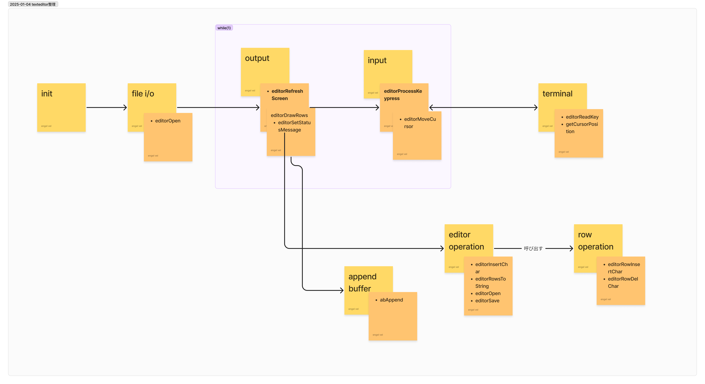

やったもの
texteditor
きっかけ
- texteditor のチュートリアルを go で書き換えるみたいな記事を読んだ
- ざっと見た感じとてもよくできていたので年末年始でやることにした
進捗
- 5.a text editor まで
- search と syntax highlighting はこの期間では終わらなさそうだったので今後の土日でのんびりやる
学び・感想
- とてもとても楽しかった
- 自分のプログラミングの原体験が C++でゲーム作るとかだったので、特にキー入力の部分とかは「こういうのやったやった」みたいなとても懐かしい気持ちになった
- 境界値とかその辺
- 自作 OS の本でも似たようなものを読んだ
switch (key) {
case ARROW_LEFT:
if (E.cx != 0) {
E.cx--;
} else if (E.cy > 0) {
E.cy--;
E.cx = E.row[E.cy].size;
}
break;
case ARROW_RIGHT:
if (row && E.cx < row->size) {
E.cx++;
} else if (row && E.cx == row->size) {
E.cy++;
E.cx = 0;
}
break;
case ARROW_UP:
if (E.cy != 0) {
E.cy--;
}
break;
case ARROW_DOWN:
if (E.cy < E.numrows) {
E.cy++;
}
break;
}
- ゲームのリメイクを遊んでるような気分
- Tidy First? を実践できた
- 一章終わるごとに 1 つ整頓として充てていいというルールを自分で決めて、その中でリポジトリを少しずつ便利にしていった
- これによってただのチュートリアル写経から、程よく自分のリポジトリ感を持ちながら育てることができたと思う
- だから go に書き換えるとか追加のハードルは課さなかった
- 設計と進め方が美しすぎる
- 1 ファイルの中でもセクション分けでここまで整理できるとは思わなかった
- まずハードコーディングで文字を読み込んで(=ただ表示して)、そのあとファイルを読み込むようにするみたいなステップもよかった
- あとはハッピーパス(普通の一文字の入力)を考えてから特殊ケース(enter とか delete )を考える部分とか
- Makefile を使っているが、tab 文字の描画で 1 ステップ挟むときに
./kilo Makefile ですぐ動作確認できるところとか、よくできてるなと思った
- わざわざ tab 文字のダミーファイルを作らなくていいところ
- 一気にそれっぽくなる瞬間一覧
- 自分の作ったファイルが表示できる
- 文字が入力できる
- カーソルが動く
- 次の行に進める
- 保存できる
- ステータスバーが表示される
- 例によって図解で整理した

- エディタを使ってみて
- 当然だが、まだまだだねという感想になった
- コーディングするには syntax highlighting や auto indent がないとだいぶきつい
- VSCode や Vim がいかに良くできてるかを実感できた
- feature test macro や VT100のUser guide は普通に勉強になった
- こうやってターミナル系のアプリって作ってくのねという参考になった